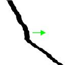
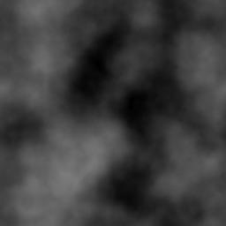
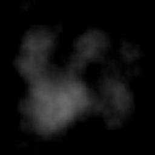
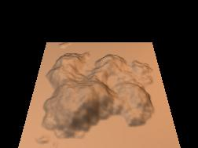
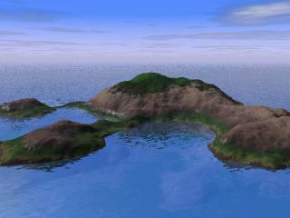
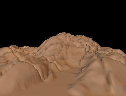
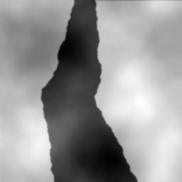
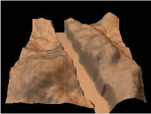

| |
This button sets the difference
in altitude to 0 instantly. In most cases, in a crack or a fissure,
there are no difference between the height of the two walls. |
| |
This scale controls how wide is the separation.
If a control line is currently active, moving this scale would widen
the underlying crack instantly. |
| |
With this option, the currently active control
line is automatically accepted when you click elsewhere in
the height field to begin a new control line. The random seed is
refreshed, so that the new fractal line is different. This is useful
for drawing rapidly a network of fissures. |
Direction of the separation |
When the slope of the line is close to 45°,
it is better to avoid situations 5 and 6, because the width
of the crack would look uneven. 
|
You can get a nicer crack by rotating it so that
it cuts a corner!. |
| 1. Creating the height field Create a new standard terrain.
We'll use here the default terrain of subdivision #2. |
 |
| 2. Decreasing the contrast for softening the
terrain We should decrease the contrast
without keeping luminosity to get a
low reef with a rather polished look.
Not keeping luminosity also allows to decrease the minimal height of the terrain to 0, which is the height of the oceanic floor. We could also decrease the scale of the height field on the Y axis in the .pov scene definition. However, this effect couldn't be seen in the Geomorph preview. |
 |
| 3. Creating an Island (lowering the
edges) |
  |
| 4. Setting the camera position Now you should select the Povray scene sea_and_rocks.pov for adjusting the terrain with the water. Click the The camera has been lowered and rotated so that the reef occupies the most part of the picture and so that the skyline divides the picture at approximately one third of its height, from the top. 
object {hf translate y*0 texture {shore_granite translate y*0 scale 0.25 } } |
|
| 5. Creating fissures repeatedly Before beginning this step, save you height field! Set the altitude difference to 0. Choose a 1 pixel width. Check if the "Auto Accept & Refresh" option is active (it is supposed to be the new default!). If not, you will draw the same fissure repeatedly. Then, draw you mouse and shoot in all directions! |
   |
| 1. The "standard" way, by using the
"separation" parameter of the fault pen. |
 
|
| 2. By creating 2 identical faults,
parallel but with inverted altitude difference. A benefit of this technique is to allow the creation of a crack with walls which are not parallel. However, this is not a true fault divided in two walls, but rather a sudden and narrow drop in altitude. The texture of the terrain surface is still visible at the bottom of the crack. You can remove it by decreasing the brigthness of the image, if you want. Roughly, you can do it this way:
|
 
|
| 3. By digging the crack with a fractal pen
- a vertical slope version. Here, we simulate the crack with a "valley" featuring steep walls. When the fractal pen is used instead of the continuous pen, the edges are kept irregular, even when the wall is vertical. The pen level is set to 100%, because we want the highest altitude difference we can. The "Dig a valley" option should be chosen. The shape filter is used to adjust the slope of the pen edges. The "Gaussian Bell with parameters choice" has been chosen for better control. |
  |
| 3b. By digging the crack with a fractal pen
- an average slope version. To get a lower and irregular slope, the pen level has been reduced by half. Also, a narrower shape filter has been selected. The roughness had been increased from 0 to 1 to get more irregular walls. The spacing has been reduced to 15%. otherwise the valley ground was too irregular. |
 
|
 Back to the Geomorph Home
Page
Back to the Geomorph Home
Page